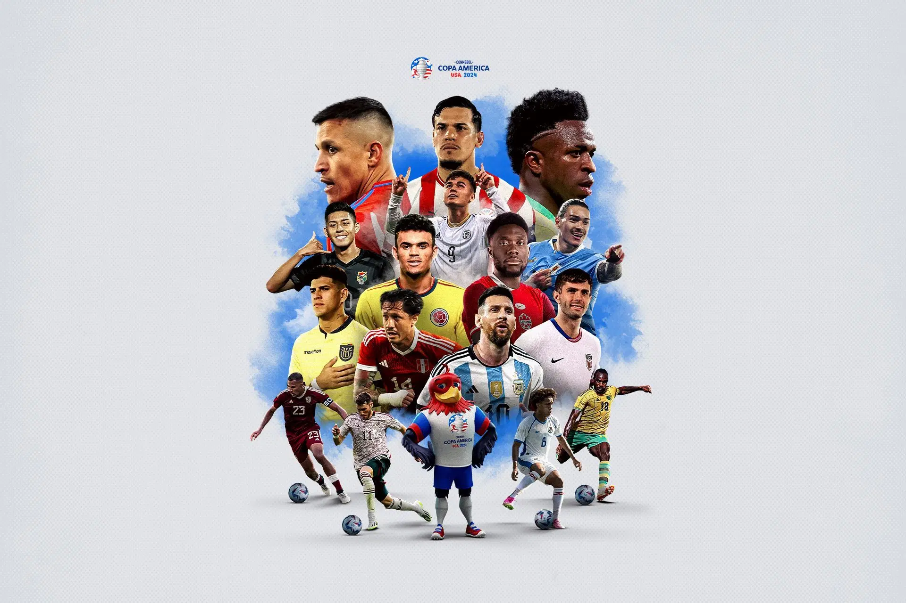

Sobre el Torneo

La Copa América 2024 se celebrará en Estados Unidos, reuniendo a las mejores selecciones de América para competir por el título de campeón. Los partidos se jugarán en estadios icónicos, brindando a los aficionados una experiencia inolvidable. Este torneo no solo celebra el fútbol, sino también la cultura y la pasión de los países participantes. ¡Prepárate para disfrutar de partidos llenos de emoción y fervor!
Videos Destacados
Los 10 mejores goles en toda la historia de la Copa América
Ceremonia de premiación de la CONMEBOL Copa América 2021
COPA AMERICA 🏆 ORIGEN E HISTORIA 😎